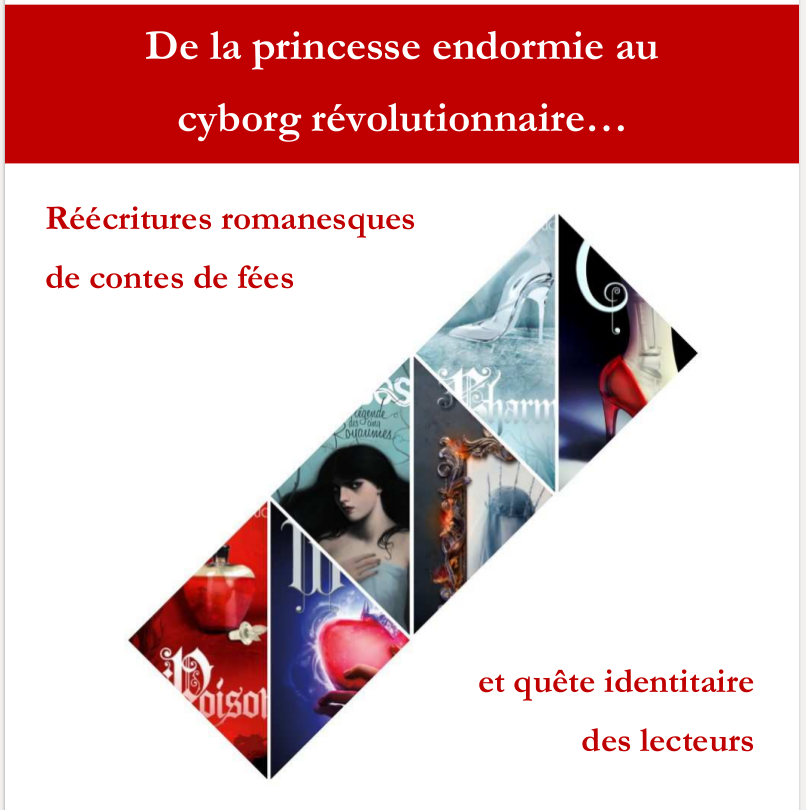
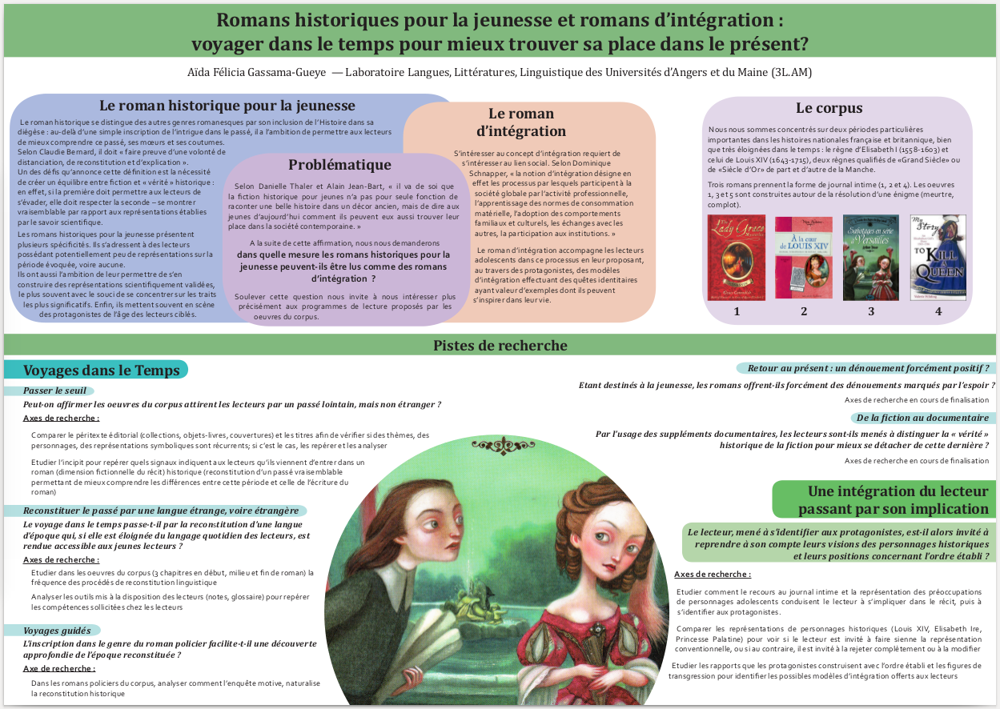

Travaux
Recherche universitaire
Cliquer sur le titre de chaque projet pour en savoir plus

De la princesse éplorée au cyborg révolutionnaire... :
réécriture romanesque des contes de féées et quête identitaire des lectrices
Mémoire de master
Plan
I — Réécriture de contes fées patrimoniaux : entre perpétuation et actualisation
A — Patrimoine, bibliothèque intérieure et réécriture
B — Analyse des contes-sources
C — Actualisation et ruptures idéologiques : la reprise de scènes emblématiques
II — Actualisation et réflexivité : entre métatextualité et jeux sur les stéréotypes concernant les personnages des contes-sources
A — Actualisation et métatextualité
B — La convocation des personnages dans les seuils d’entrée : couvertures et premières scènes
C — Narration romanesque, psychologie des personnages et ruptures idéologiques
III — Personnages féminins : quels aboutissements dans leurs parcours ?
A — Quelles versions du Grand Amour pour les princesses ?
B — Amour et personnages négatifs : entre condamnation et rédemption
C — Reines et princesses : la place du pouvoir politique
Résumé
Les réécritures romanesques de contes de fées construisent souvent avec leurs hypotextes une relation duelle : le caractère patrimonial des contes de fées invite les auteurs contemporains à les adapter, parodier, réécrire, en s’inscrivant à la fois dans l’hommage et dans la distanciation. Afin d’étudier ce rapport équivoque, nous nous sommes penchée sur l’un des changements les plus significatifs dans le passage de conte à roman : le traitement des personnages.
Les contes de fées « de princesses » les plus célèbres (La Belle au bois dormant, Blanche-Neige, Cendrillon) proposent des modèles féminins très traditionnels. Or dans les œuvres étudiées (réécritures romanesques pour adolescents et jeunes adultes ; œuvres dramatiques pour adultes), ces modèles sont remis en cause à des degrés divers. Dès les seuils d’entrée, les lectrices et lectrices et lecteurs sont invités à s’appuyer sur les stéréotypes liés aux contes-sources, mais également à s’attendre à ce que ces représentations figées soient bousculées au cours du récit. Ainsi, grâce à la focalisation interne, les réécritures romanesques permettent aux auteurs de développer la psychologie et l’importance de personnages secondaires, ou de proposer une incarnation du Prince Charmant dénonçant ce stéréotype masculin.
L’étude des parcours des personnages féminins révèle que l’Amour y est encore présent ; toutefois, les auteurs choisissent le plus souvent de s’écarter du modèle classique du Grand Amour, pour mieux le remettre en cause, voire accorder à l’Amour une place secondaire dans l’épanouissement des héroïnes. En effet, dans ces réécritures se déroulant dans les arcanes du pouvoir, la conquête et l’exercice de ce dernier jouent aussi un rôle important dans la caractérisation des personnages féminins.
En outre, le développement de la psychologie des personnages joue un grand rôle dans l’actualisation des personnages de méchantes, proposant des incarnations plus complexes que les simples repoussoirs caricaturaux traditionnels. Ce développement mène parfois à la rédemption de personnages négatifs, aux yeux des autres personnages de leur histoire et aux yeux des lectrices et lectrices et lecteurs.
Enfin, dans les œuvres du corpus, un personnage positif et un personnage négatif se voient souvent associés dans une relation de double, partageant des caractéristiques essentielles malgré leur différence de statut. Ces relations donnent l’occasion aux lectrices et lectrices et lecteurs de développer une approche plus réflexive des motivations des personnages.
Or par cette approche réflexive, les réécritures romanesques étudiées nous semblent non perpétuer les hypotextes originaux mais plutôt inviter à interroger la place de ces derniers dans l’éducation sociale et culturelle des jeunes enfants et à ne pas adopter les modèles proposés par le patrimoine, et les valeurs traditionnelles qui leur sont rattachées, sans préalablement les questionner à l’aune des valeurs contemporaines.
Mémoire court sur les prix littéraires et les clubs de lecture en section Jeunesse, rédigé à la suite d’un travail de recherche autour de la médiation littéraire auprès des enfants et des adolescents, enrichi par plusieurs entretiens avec des bibliothécaires expérimentées.
Plan
I — La lecture littéraire et les jeunes : quelles pratiques ? quelles motivations ? quelles compétences en jeu ?
A — Pratiques de lecture chez les jeunes
- Une pratique d’abord forte qui baisse avec l’âge
- Profils de lectrices et lecteurs
B — Plaisir et goût de lire
- Sentiment d’effort, d’ennui et de perte de temps
- Plaisir de lire
- Goût de lire
C — La lecture littéraire : définitions
II — Médiation de la lecture littéraire : quels lieux ? quels enjeux ?
A — Formation à la lecture littéraire : quels enjeux ?
- Enjeux de la formation à la lecture littéraire : approches théoriques
- L’implication du jeune lecteur dans sa formation
B — Lecture littéraire à l’école et en bibliothèque : quels objectifs dans la formation des lectrices et lecteurs autonomes ?
- La lecture littéraire en milieu scolaire : une formation étroitement encadrée
- La lecture littéraire en bibliothèque municipale : sous le signe d’une fréquentation volontaire
C — Prix littéraires et club de jeunes critiques : quels rôles en bibliothèque municipale ?
- Objectifs des animations en bibliothèque municipale à destination des préadolescents et adolescents
- Prix littéraires et clubs de jeunes critiques, ou comment voir son avis de jeunes lectrices et lecteurs valorisé ?
III — Comparaison de clubs de jeunes critiques et prix littéraires en bibliothèque jeunesse
A — Quatre animations
- Le Prix des Incorruptibles à la bibliothèque d’Escalquens (Haute‐Garonne)
- Le prix Les Mordus du Polar à Paris
- Le prix J’ai lu, j’élis à Angers
- Les Graines de critiques toulousains
B — Quelques remarques
- Développement de l’esprit critique et formation des lectrices et lecteurs autonomes
- Inscription de la bibliothèque dans les loisirs des jeunes lectrices et lecteurs
- Evaluation
- Forces et faiblesses des bibliothèques municipales
Quelques concepts
Le roman historique
Le roman historique se distingue des autres genres romanesques par son inclusion de l’Histoire dans sa diégèse : au-delà d’une simple inscription de l’intrigue dans le passé, il a l’ambition de permettre aux lectrices et lecteurs de mieux comprendre ce passé, ses mœurs et ses coutumes. Selon Claudie Bernard, il doit "faire preuve d’une volonté de distanciation, de reconstitution et d’explication".
Un des défis qu’annonce cette définition est la nécessité de créer un équilibre entre fiction et " vérité " historique : en effet, si la première doit permettre aux lectrices et lecteurs de s’évader, elle doit respecter la seconde – se montrer vraisemblable par rapport aux représentations établies par le savoir scientifique.
Les romans historiques pour la jeunesse présentent plusieurs spécificités. Ils s'adressent à des lectrices et lecteurs possédant potentiellement peu de représentations sur la période évoquée, voire aucune. Ils on aussi l’ambition de leur permettre de s’en construire des représentations scientifiquement validées, le plus souvent avec le souci de se concentrer sur les traits les plus significatifs. Enfin, ils mettent souvent en scène des protagonistes de l’âge des lectrices et lecteurs ciblés.
Le roman d'intégration
S’intéresser au concept d’intégration requiert de s’intéresser au lien social. Selon Dominique Schnapper, "la notion d’intégration désigne en effet les processus par lesquels participent à la société globale par l’activité professionnelle, l’apprentissage des normes de consommation matérielle, l’adoption des comportements familiaux et culturels, les échanges avec les autres, la participation aux institutions."
Le roman d’intégration accompagne les adolescentes et adolescents dans ce processus en leur proposant, au travers des protagonistes, des modèles d’intégration effectuant des quêtes identitaires ayant valeur d’exemples dont ils peuvent s’inspirer dans leur vie.
Problématique
Selon Danielle Thaler et Alain Jean-Bart, "il va de soi que la fiction historique pour jeunes n’a pas pour seule fonction de raconter une belle histoire dans un décor ancien, mais de dire aux jeunes d’aujourd’hui comment ils peuvent eux aussi trouver leur place dans la société contemporaine."
A la suite de cette affirmation,
nous interrogerons dans quelle mesure les romans historiques pour la jeunesse peuvent-ils être lus comme des romans d’intégration ?
Soulever cette question mène à s’intéresser plus précisément aux programme de lecture proposés dans les œuvres du corpus.

Pistes de recherche
Voyages dans le Temps
Passer le seuil
Peut-on affirmer les oeuvres du corpus attirent les lectrices et lecteurs par un passé lointain, mais non étranger ?
Axes de recherche :
- Comparer le péritexte éditorial (collections, objets-livres, couvertures) et les titres afin de vérifier si des thèmes, des personnages, des représentations symboliques sont récurrents; si c’est le cas, les repérer et les analyser
- Etudier l’incipit pour repérer quels signaux indiquent aux lectrices et lecteurs qu’ils viennent d’entrer dans un roman (dimension fictionnelle du récit) historique (reconstitution d’un passé vraisemblable permettant de mieux comprendre les différences entre cette période et celle de l’écriture du roman)
Reconstituer le passé par une langue étrange, voire étrangère
Le voyage dans le temps passe-t-il par la reconstitution d’une langue d’époque qui, si elle est éloignée du langage quotidien des lectrices et lecteurs, est rendue accessible aux jeunes lectrices et lecteurs ?
Axes de recherche :
- Etudier dans les œuvres du corpus (3 chapitres en début, milieu et fin de roman) la fréquence des procédés de reconstitution linguistique
- Analyser les outils mis à la disposition des lectrices et lecteurs (notes, glossaire) pour repérer les compétences sollicitées chez les lectrices et lecteurs
Voyages guidés
L’inscription dans le genre du roman policier facilite-t-il une découverte approfondie de l’époque reconstituée ?
Axe de recherche :
- Dans les romans policiers du corpus, analyser comment l’enquête motive, naturalise la reconstitution historique
Retour au présent : un dénouement forcément positif ?
Etant destinés à la jeunesse, les romans offrent-ils forcément des dénouements marqués par l’espoir ?
De la fiction au documentaire
Par l’usage des suppléments documentaires, les lectrices et lecteurs sont-ils menés à distinguer la "vérité" historique de la fiction pour mieux se détacher de cette dernière ?
Une intégration des lectrices et lecteurs passant par leur implication
Les lectrices et lecteurs, menés à s’identifier aux protagonistes, sont-ils alors invités à reprendre à leur compte le point de vue des personnages historiques et les positions de ces derniers concernant l’ordre établi ?
Axes de recherche :
- Etudier comment le recours au journal intime et la représentation des préoccupations de personnages adolescents conduisent le lecteur à s’impliquer dans le récit, puis à s’identifier aux protagonistes
- Comparer les représentations de personnages historiques (Louis XIV, Elisabeth I, Princesse Palatine) pour voir si les lectrices et lecteurs sont invités à faire leur la représentation conventionnelle ou, au contraire, invités à la rejeter complètement ou la modifier
- Etudier les rapports que les protagonistes construisent avec l’ordre établi et les figures de transgression pour identifier les possibles modèles d’intégration offerts